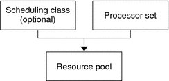

Introduction to Resource Pools
Resource pools enable you to separate workloads so that workload consumption of certain resources does
not overlap. This resource reservation helps to achieve predictable performance on systems with
mixed workloads.
Resource pools provide a persistent configuration mechanism for processor set (pset) configuration and,
optionally, scheduling class assignment.
Figure 12-1 Resource Pool Framework

A pool can be thought of as a specific binding of the
various resource sets that are available on your system. You can create pools
that represent different kinds of possible resource combinations:
pool1: pset_default |
pool2: pset1 |
pool3: pset1, pool.scheduler="FSS" |
By grouping multiple partitions, pools provide a handle to associate with labeled workloads.
Each project entry in the /etc/project file can have a single pool associated
with that entry, which is specified using the project.pool attribute.
When pools are enabled, a default pool and a default processor set form the base configuration. Additional
user-defined pools and processor sets can be created and added to the configuration.
A CPU can only belong to one processor set. User-defined pools and processor
sets can be destroyed. The default pool and the default processor set cannot
be destroyed.
The default pool has the pool.default property set to true. The default processor
set has the pset.default property set to true. Thus, both the default pool
and the default processor set can be identified even if their names
have been changed.
The user-defined pools mechanism is primarily for use on large machines of more
than four CPUs. However, small machines can still benefit from this functionality. On
small machines, you can create pools that share noncritical resource partitions. The pools
are separated only on the basis of critical resources.